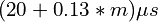

n-Dimensional Interpolation¶
General Principles¶
Many structure validation tasks boil down to checking an n-dimensional set of values (e.g. the chi dihedral angles for a sidechain) against a map of probability values based on what we know from very high-resolution structures. For a given set of (x1, x2, … xn) coordinates, the resulting P-value must be calculated via linear interpolation from the 2^n corners of the n-orthotope surrounding the point in the map.
Providing rotamer and Ramachandran validation in real time for a 1,000-residue
simulation requires on the order of 4-5,000 dihedral angle measurements, 1,000
2D interpolations and 1,000 1-4D interpolations (spread over 25 different maps)
for every coordinate update. Maintaining a high graphics framereate in the face
of 20+ coordinate updates per second therefore requires this pipeline to be very
highly optimised. The RegularGridInterpolator described below may be
used as-is as a Python class, taking approximately 
to perform m 3D interpolations on a single map. While this is good enough for
many situations, the Python class is not used by ISOLDE’s core Rama and
Rotamer classes. Instead the underlying C++ class is used, allowing all
the necessary RegularGridInterpolator instances to be stored in an
efficient C++ mapping so that the entire validation task is handled in a single
Python call.
n-dimensional Linear Interpolation¶
RegularGridInterpolator¶
- class chimerax.isolde.interpolation.RegularGridInterpolator(dim, axis_lengths, min_vals, max_vals, grid_data)¶
A C++ implementation of n-dimensional regular grid interpolation, interfaced to Python using ctypes. Designed as an almost-drop-in replacement for the SciPy RegularGridInterpolator, but significantly faster (particularly for small numbers of interpolations). Whereas the SciPy interpolator has a fixed overhead of about 400 microseconds per call, this implementation reduces that to 20 microseconds. In addition, the speed of each interpolation is increased approximately 5-fold.
Achieving this speed does impose a few limitations, however. Whereas the SciPy interpolator allows uneven steps along each axis, for this implementation the gridded data must be evenly-spaced (although it is not necessary for each axis to have the same spacing). The initialisation function is therefore slightly different to the SciPy implementation to reflect this.
While in theory any number of dimensions is supported, in practice memory limitations make it impractical beyond 4-5 dimensions for most situations. For example, to handle interpolation over a 360 degree range with periodic wrapping on a 10 degree grid requires 39 points per axis. For three dimensions the resulting grid contains about 60k points; four dimensions contains about 2.3 million; five dimensions 90 million and six dimensions 3.5 billion (that is, about 25 GB of RAM in double precision).
Example usage is as follows (also see
test_interpolator()):import numpy dim = 3 axis_lengths = [50, 50, 50] min_vals = [0, 0, 0] max_vals = [1, 1, 1] grid_data = numpy.random.rand(50,50,50) interp = RegularGridInterpolator(dim, axis_lengths, min_vals, max_vals, grid_data) data = numpy.random.rand(10000, 3) results = interp(data) # or, if you prefer: results = interp.interpolate(data)Interpolation is fastest if the input is a NumPy double array - anything else is converted internally (with an associated performance penalty) prior to calling the C++ function.
- __init__(dim, axis_lengths, min_vals, max_vals, grid_data)¶
Prepare the interpolator for a given n-dimensional grid. Once created, the grid elements cannot be modified.
- Args:
- dim:
An integer specifying the number of dimensions
- axis_lengths:
A numpy int array of length dim, specifying the number of points along each axis
- min_vals:
A numpy double array of length dim, specifying the minimum value of each axis
- max_vals:
A numpy double array of length dim, specifying the maximum value of each axis
- grid_data:
A n-dimensional numpy double array with dimensions matching axis_lengths, containing all the gridded data.
- property axis_lengths¶
Returns a NumPy array of length
dimproviding the number of steps on each axis. Read only.
- property dim¶
Returns the number of dimensions of the interpolator. Read only.
- interpolate(data)¶
Returns the interpolated values for a set of (x(1), x(2), … x(
dim)) points.
- Args:
- data:
a (n,
dim) 2D NumPy array providing the coordinates at which to calculate the interpolated values. For fastest performance the data type of the array should benumpy.double.- Returns:
a 1D NumPy double array
- property max¶
Returns a NumPy array of length
dimproviding the maximum limit of each axis. Read only.